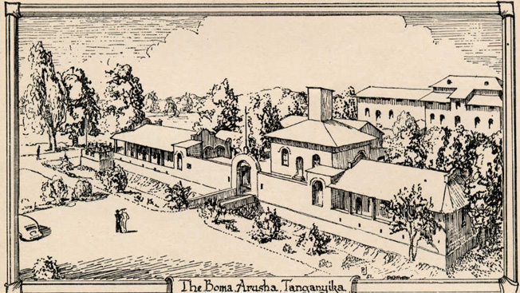
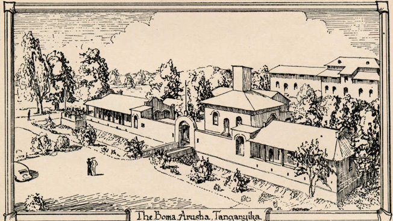

#️⃣ Ngorongoro CA #️⃣ Serengeti National Park #️⃣ Tarangire National Park #️⃣ Saadani National Park
‚úåÔ∏è I enjoyed reading about Germany history üìú, and how human and other organisms evolved.
Game driving, Bird watching, walking safaris, Night Drives
Overview
This 6 Days unforgettable tour will take you to the Serengeti Plains National Park, the heart of wild Africa and a massive wilderness of 14500 square km, where every day brings a new landscape and a new adventure.
Your African safari will also take you to the Ngorongoro Crater, featuring one of the highest concentrations of game in Africa. Here you will witness an amazing spectacle of African wildlife – inside a self-contained world featuring an unbelievable concentration of animals.
Lastly your safari will take you to the Lake Manyara National Park, one of Tanzania's most dramatically located wildlife areas, consisting of a shallow but huge soda lake, at the foot of the Great Rift Valley's western escarpment. The size of this national park makes it perfect for a one-day game drive, and is famous for its unique tree-climbing lions.
When:
itinerary:
⏭️ Arrival ⏭️ Transfer to Tarangire National Park ⏭️ Transfer to Serengeti National Park ⏭️ Full Day Serengeti National Park ⏭️ Serengeti National Park and Transfer to Ngorongoro ⏭️ Full Day in Ngorongoro Crater ⏭️ Game Drive in Serengeti and Transfer to Arusha ⏭️ Departure
Pricing from: 2334 /Person/Day
- üëç English speaking guide
- üëç Transport (to and from the hotel)
- üëç Entrance fees
Included
- üëé Camera
- üëé Extra Activities other than Natural Museum üìú visit
- üëé Hygienic items
Excluded
- ‚òù This tour involves some walking so wear comfortable shoes.
- ‚òù This is not a wheelchair accessible tour.
Please Note
Watch the Video
What to see and what to do
- üßê Bird species Birds call this place home as they are 500 and more of bird species sight to behold. It‚Äôs the twitchier with species like secretary bird, ostriches, flamingos, eagles and so much more. They act as part of major attraction in the park.
- üßê The wildebeest migration Wildebeest is also termed as the 7 wonders of the world. Having a journey of over 1 million wildebeest across with zebras and other animals its beauty in the eye. Wildebeest habit is migrating so they do extend to Kenya borders on Maasai Mara National park as they trek for miles in search for greener pasture and fresh water thus what makes it beautiful.
- üßê Olduvai Gorge Another attraction which is within Serengeti national park. Its where the oldest remains of early man were dug from about a million years ago by Dr Louis leaky as a famous East Africa archaeologists, this discovery made changes in evolution of man.
- üßê Moru KopjesThis scattered protruding rock around Serengeti is perfect place to catch the black rhinos. Use to offer shades and disguise for animals and predators.
- üßê Retina hippo poolMost of large hippos live in this pool, they are so many in such they occupy the pool and results to often fight break ups.
- üßê Grumeti RiverIs a popular attraction especially during the wildebeest migration, the site is spectacular as millions of beasts try to cross the river to Maasai Mara the river is infested by many crocodiles that sometimes crocodiles eat wildebeest while crossing the river. Animals drink water from the banks.
- üßê Seronera River valley It‚Äôs another attraction that provides postcard perfect views of Serengeti. The whole region surrounding the river overflowing with unique flora and fauna. There are the rivers, the gorges, the mountains and the animals.
Itinerary & Pricing
DAY 0:
Arrival
Upon arrival we will pick you up from the Airport and happily drive you to the hotel. We shall have a short briefing session before we let you spend the peaceful night.
DAY 1:
Arusha to Tarangire National Park
You shall have breakfast at your hotel in the morning. You shall then pack up and drive to Tarangire National Park. A safari spot in the Northern Circuit of Tanzania. You will find very big herds of Elephant in this park. Big cats are also abundant. Your driver shall then pick up a nice spot along the Tarangire River for you to have lunch. After spending some valuable time game driving in the park you then shall head off driving towards Karatu where you will spend the night.
DAY 2:
Tarangire to Serengeti National Park
We'll take an early breakfast, as we've got a big day of exploration and adventure ahead of us! We will begin the day with a drive towards the Serengeti. Along the way, we will pass through the rainforests of the Ngorongoro Conservation Area where you might be lucky enough to glimpse Cape buffalo, baboons, or even elephants and leopards in the dense undergrowth. Witness Africa's iconic savannah landscape and be amazed by the sheer number of animals that roam these grassy plains. Before the sun sets we shall drive to our lodge for an overnight
DAY 3:
Full Day Serengeti National Park
Today we spend the entire day at the Serengeti. Going for a game drive in the morning to catch up with the morning wildlife. We shall return to our lodge at noon for lunch and a short rest. We then shall resume our game drive. Lions are abundant at Serengeti National Park. With a lucky day we may be able to catch up with hunting cheetahs. We shall then head back to our lodge for an overnight.
DAY 4:
Serengeti National Park to Ngorongoro Conservation Area
After breakfast in the morning we head of for a game drive. Game driving for most of the day and head to Ngorongoro Conservation Area for an overnight.
DAY 5:
Full Day Ngorongoro Crater
We shall have breakfast early in the morning at the lodge and thereafter descend over 600 meters into the crater to view wildlife for a half day's safari tour. Supported by a year round water supply and fodder, the Ngorongoro National Park supports a vast variety of animals, which include herds of wildebeest, zebra, buffalo, eland, warthog, hippo, and giant African elephants. Another big draw card to this picturesque national park, is its dense population of predators, which include lions, hyenas, jackals, cheetahs and the ever-elusive leopard, which sometimes requires a trained eye to spot. We will visit Lake Magadi, a large but shallow alkaline lake in the southwestern corner, which is one of the main features of the crater. A large number of flamingos, hippos and other water birds can usually been seen here.
DAY 6:
Ngorongoro to Lake Manyara to Arusha
We shall leave the lodge after breakfast for a drive to Lake Manyara National Park.Bird-watchers will find Lake Manyara an absolute delight, with a huge variety of birds on display in the park. Even the novice can expect to be amazed by large flamingo flocks, circling birds of prey, and the brightly colored lilac breasted roller. We shall visit the hippo pool to catch up with these huge mammals before we drive off to Arusha
DAY 7:
Departure
Your tour has come to end, today we drive you to the airport for your departure. It was a pleasure hosting you we hope to see you again.
| Number Of People | 1-3 | 3-5 | 7-8 |
|---|---|---|---|
| Price/Person/Day |   |   |   |
| Luxury: | $1293 | $1293 | $1293 |
| Midrange: | $1236 | $1236 | $1236 |
| Basic: | $1200 | $1200 | $1200 |
| Children(5-10) | 40% of adult | 40% of adult | 40% of adult |
- üßê This package can be extended as you see fit, please create your bucket list and send it to us to we can create you a quote